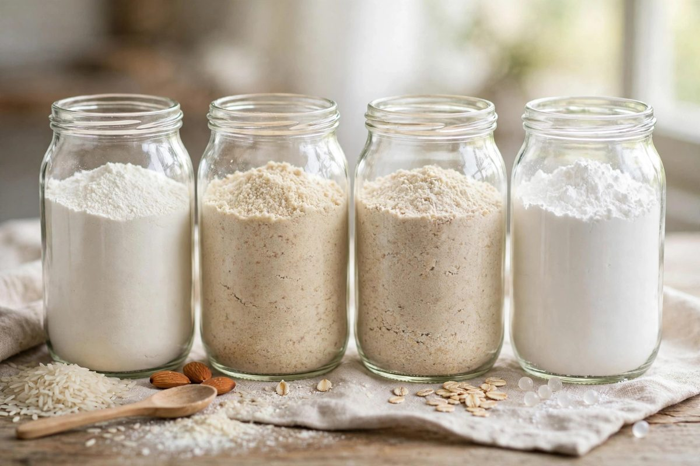

Home » Guides
Gluten-Free Flour Guide

Gluten-free baking starts with flour, and there are many more choices than wheat flour. Each gluten-free flour has its own flavour, texture, and behaviour, and no single one works for everything. Rice flour is light and neutral, sorghum is mild and versatile, buckwheat is earthy, almond is rich, and chickpea is high in protein. This guide explains the main gluten-free flours, how to use each one, and how to blend them into a flour that works for baking.
The main gluten-free flours
Rice flour is the most common gluten-free flour: it is light, neutral, and cheap, but it can be gritty on its own. Brown rice flour has more fibre and a slightly nutty flavour. Sorghum flour is mild, smooth, and similar to wheat flour in behaviour, which makes it a good all-rounder. Buckwheat flour, despite its name, is not wheat: it is earthy and dark, and it works well in pancakes and bread. Almond flour is rich and moist, and it is best for cakes and biscuits. Chickpea flour is high in protein and works well in savoury baking.
Starches and their role
Starches are not flours, but they are essential in gluten-free baking. Potato starch adds softness and moisture to cakes and bread. Tapioca starch adds chew and helps bind dough. Cornflour, which is corn starch, lightens a blend and helps cakes rise. Arrowroot is similar to cornflour and works well in sauces. A good flour blend is usually about 60 to 70 percent flour and 30 to 40 percent starch. Using starch alone makes a bake gummy, and using flour alone makes it heavy, so the balance matters.
Blending your own flour
A simple all-purpose blend is 200 grams of brown rice flour, 200 grams of sorghum flour, 100 grams of potato starch, and 100 grams of tapioca starch, with a teaspoon of xanthan gum per 250 grams of blend. Mix it well and store it in a sealed container. For bread, use more sorghum and add psyllium husk for structure. For cakes, use more rice flour and potato starch for a lighter result. For pancakes, a simple blend of rice flour and tapioca starch works well. Label your blend with the date, and use it within three months for the best results.
Buying and storing flour
Buy certified gluten-free flour if you have celiac disease, because flour made in a shared facility may contain traces of wheat. Check the label for a gluten-free claim and a recent date. Store flour in a sealed container in a cool, dry place, and use it within three months of opening, because gluten-free flour can go stale faster than wheat flour. Wholegrain flours like sorghum and buckwheat keep best in the fridge or freezer. If flour smells musty or bitter, throw it away. Buy small amounts more often rather than large amounts that sit for months.
Building your flour cupboard
A well-stocked flour cupboard makes gluten-free baking much easier. Keep a ready-made 1-to-1 blend for everyday baking, a bag of sorghum flour for bread, a bag of rice flour for cakes, and a bag of potato starch for lightness. Add a small bag of xanthan gum and a bag of psyllium husk for structure. Store flours in sealed jars, labelled with the name and the date, and keep wholegrain flours in the fridge so they stay fresh. Buy small amounts more often, rather than large amounts that go stale. A tidy flour cupboard means you can bake whenever you want, without a trip to the shops.
Frequently Asked Questions
What is the best single gluten-free flour?
There is no single best flour. Sorghum is the most versatile on its own, but a blend of flours and starches works better than any single flour.
Is buckwheat gluten-free?
Yes. Despite its name, buckwheat is not wheat. It is a seed, and it is naturally gluten-free, but check that it is certified.
Do I need to add xanthan gum to a flour blend?
Usually yes, unless the blend already contains it. About half a teaspoon per 250 grams of flour is a good starting point.
Important: if you have celiac disease or a wheat allergy, always check labels and look for certified gluten-free products. This site is general information only — talk to your doctor or a registered dietitian before changing your diet.